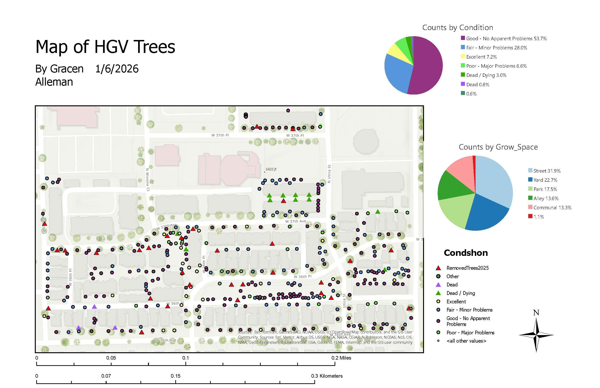
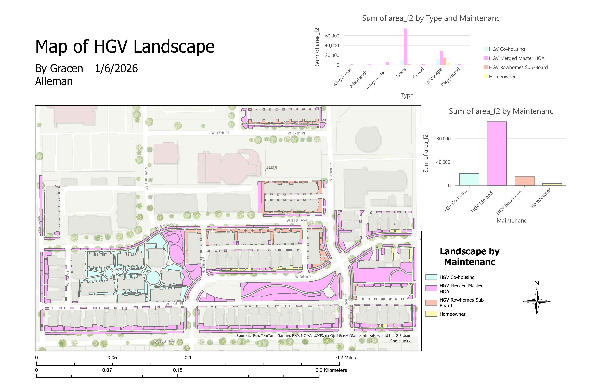
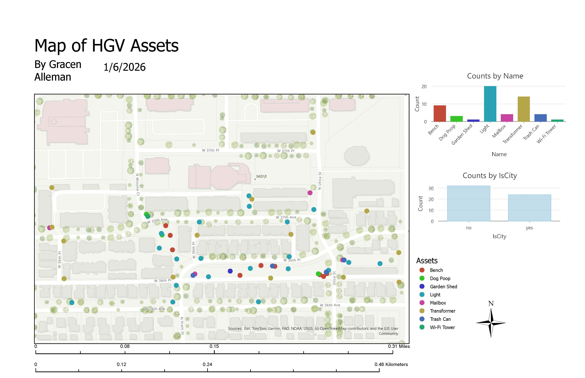
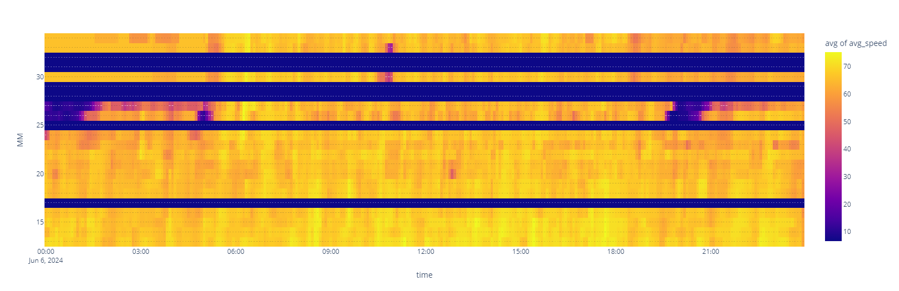
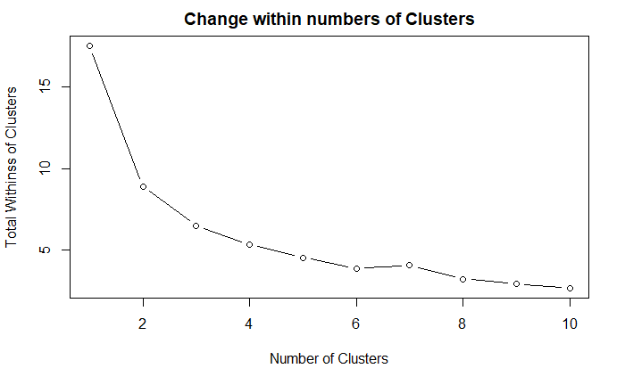
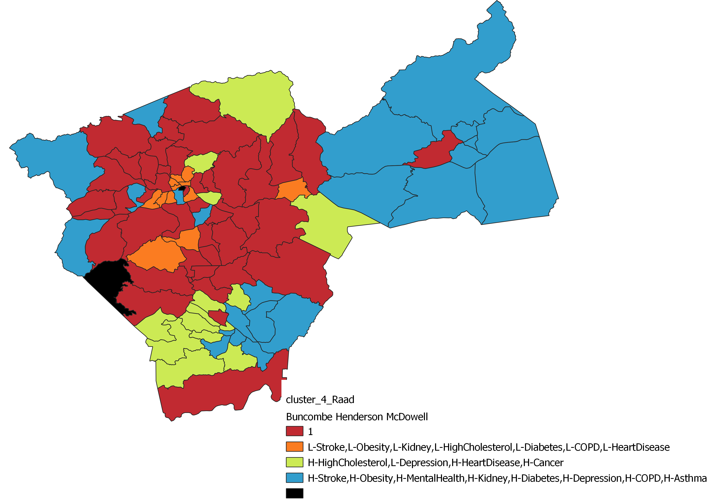

About Me
I am currently enrolled at University of Colorado Denver, where I am Pursuing a Graduate GIS certificate. In 2024 I got a got a Bachelor of Arts in Math and Data Science from Warren Wilson College. I am living and working in Denver, Colorado. I dream of being able to design cities to better serve the people and the communities that contain them. I grew up in an alternative living environment, known as cohousing, where community was an intentional aspect of the space's design. A fun fact about me is that I basket weave (not underwater) as a creative expression.
My ResumeProjects
Denver HOA Tree Inventory
This project was done for an HOA in Denver called Hillanses Garden Village (HGV). The work wast idfify what trees had been removed cense the last tree inventory and where the trees were located. The goola my map is showing wher the trees are removed and what trees are still there. My map was used becues of HOA resues and prosciesy with GIS platormas my map was the best choice. The I alos worked the HOA to make a map of onsherp of the ladandscaps and trees in the HOA.





Research Assistantship: Analyzing Denver Changes to School Change
This project is bing done for an RA position at University of Colorado Denver.

NC DOT-Power BI Dashboard and Highway Event Heatmap
As an interntership I worked for the North Carolina Department of Transportation. I worked in two departments: the Signal System Timing and Operations department and the Transportation Mobility and Safety Division. At both I was given the opportunity to work with compelling mentors, complex data sets, and intresting projects. I made a Power BI dashboard for aggregating the number of cars on an on-ramp and I made a heatmap showing where congestion announcements were happening.
There is a ramp meter with 3 sensor groups at the westbound entrance ramp at 540 and Falls of Neuse in Raleigh. There is a meter group at the light letting people in, one on 540 measuring the speed and density of oncoming vehicles, and one at the beginning of the light measuring the length of the queue. The goal of this project was to make data-driven decisions about the long-term design of the road, and find ways to use and visualize the changing data. They contain average traffic speed (MPH), volume, and occupancy. I cleaned the data in Python, and then updated the Power BI page every week when new data was available.
I used Drivewise data to make a heat map of traffic event data over Clear Guide data. DriveWise is an app that gives truck drivers notifications if there is congestion ahead, similar to the app Waze, and I used Clear Guide, which keeps records of traffic speed. To make the heat map, I converted Drivewise data from latitude and longitude data to mile markers using GIS buffers around mile marker data. I made a unique string using the mile marker followed by the date and time for both the Clear Guide data and the Drivewise data as a way of joining the data. I created a graph of Clear Guide data with mile markers as the y-axis and time on the x-axis colored by average speed data, with Drivewise event data layered on top.
- Microsoft Power BI
- Python
- QGIS
- Plotly

An Application of Clustering: Addressing Food Insecurity in Western North Carolina
This was a group research project with Neylan Visnius, Mason Hollar and Advisers Holly Rosson and David Abernathy, researched areas of food insecurity in Western North Carolina, in the counties of Buncombe, McDowell and Henderson. Clustering is a data analysis technique that divides a dataset into distinct groups, with each group containing similar data points. We apply clustering to CDC social vulnerability and health conditions data to identify and map geographic regions in Western North Carolina that are most suitable for targeted outreach efforts by a local food bank. We ran the clustering algorithm on health and social vulnerability variables. After creating the clusters we used statistical analyses to determine what was going on in the clusters with RStudio. We also used QGIS and the census geographic boundary to map the clusters.
- QGIS
- R Studio
- Canva
Social Vulnerability Variables Used:
- Below Poverty
- Housing Units
- Unemployed
- No High School
- Single Parent
- Minority
- Disabled
- No Vehicle
Health variables used:
- Stroke
- Kidney Disease
- Obesity
- High Cholesterol
- Diabetes
- COPD
- Asthma
- High Blood Pressure
.png)

